が表示されるまでマウスカーソルを移動させます。
が表示されるまでマウスカーソルを移動させます。- Biognosys (30 min cal)－今作成した値。
- Biognosys-11 (iRT-C18)－Biognosys社が定義した値。
ターゲットプロテオミクス分野では、ペプチドの保持時間の予測は長いこと関心の的となっていました。「ターゲットメソッドの最適化」チュートリアルにあるように、Skylineではバージョン0.2で、ペプチドの非修飾シークエンスに基づく保持時間予測法としてSSRCalc疎水性カルキュレータ1を組み込みました。また、バージョン0.5までにはターゲット実験のスケジュール化取得メソッドをサポートするようになりました。この方法では、「ターゲットメソッドの最適化」チュートリアルでも説明しているように、まずは複数の繰り返し測定に使用するシステム上でスケジュールされていないすべてのターゲットペプチドを測定します。クロマトグラフィー条件の変更が必要でない限り、スケジュール化されていないインジェクションから得られた保持時間は、その後の取得のスケジュールに使用できます。
スケジュール化なしの測定方法には、クロマトグラフィー条件が変更されれば、それぞれのスケジュール化メソッドについてMS測定を何回も行わなければいけない可能性がある、という欠点があります。 クロマトグラフィーの変更は、研究室間でメソッド共有する場合や同一研究室内で複数の装置を用いる場合、または同一装置であっても実験の途中でカラムを変更する場合などに必要となります。MacCoss研究室でのある実験では、45回以上の繰り返し測定においてシングルメソッド取得に780個のトランジションをスケジュールするために、5回のスケジュール化されていない測定を必要としました。NCI-CPTACの検証ワーキンググループによる研究でも、150～200個のインジェクション実験において、シングルメソッド取得に750個のトランジションをスケジュールするために、6回のスケジュール化されていない測定が必要となりました。この研究は、11の研究室で14台の装置を用いて実施され、研究室によっては途中でカラムの変更が必要になるだけの十分なインジェクションが行われました。ターゲットプロテオミクスの実験においては、研究室間、分析装置間やグラジエントの変更時にすでに測定されたペプチド保持時間を再利用して校正の実行が1回で済むようになれば、使用するスケジュール化メソッドの構築を大幅に簡素化できるでしょう。
また、より正確に保持時間を予測することができれば、ピーク同定の検証により強力なツールとなります。たとえば、平均値からの標準偏差の2倍値が5分であった場合、その数値が1分であった場合よりも、多くのピーク候補が信頼できるものとなります。
iRTの保持時間校正標準品の市場は、本チュートリアルが初めて記述されたときよりも大幅に成長していますが、本チュートリアルで使用したオリジナルのBiognosys社の標準品は現在も非常によく利用されています。ここで紹介するiRTの概念はまた、今ではプロテオーム全体のDIA実験で幅広く使用され、DIA実行の正規化保持時間でのDDA実行で検出されるペプチドの照会に利用されています。また、こういった実験においては内在性ペプチドを校正アンカーとして使用して、標準品の注入による出費や複雑性を回避するのがより一般的になっています。
このチュートリアルでは、30分のグラジエント条件で実験的に測定した保持時間をiRT値として保存し、この値を使用して90分のグラジエント条件でのターゲットメソッドをスケジュールします。また、iRTによる保持時間の予測エラーの低減が、ピーク同定の信頼性の向上に繋がることもわかるでしょう。さらに、データ依存的測定（DDA）の実験から構築したスペクトルライブラリ内のペプチド保持時間をiRT値に変換していきます。これを使用すると、たった一度の校正インジェクションで探索実験からターゲット実験のスケジュールまでを実施したり、またはまったくスケジュールすることなくDIAデータ内のペプチドの照会を実行できます。
本チュートリアルを始める前に、次のzipファイルをダウンロードしてください。
https://skyline.ms/tutorials/iRT.zip
この中のファイルを、次のようにコンピュータ上のフォルダで解凍します。
C:\Users\brendanx\Documents
これにより次の新しいフォルダが作成されます。
C:\Users\brendanx\Documents\iRT
本チュートリアルには、必要なすべてのファイルが含まれています。Windows File Explorer内で当該ファイルをダブルクリックするか、Skyline内で [ ファイル ] メニューの [ 開く ] メニューをクリックして、このフォルダ中の「iRT-C18 Standard.sky」ファイルを開きます。
本チュートリアルでは、「iRTキット」を使用してBiognosys社により規定されたiRT-C18標準品を使って作業していきますが、iRT自体は簡単に測定でき、ほぼすべてのグラジエント条件を扱う任意のアンカーぺプチドセット（一般に10から20を推奨）を使用してあらゆるペプチドに適用できます。今開いたドキュメントに変更を加える前に、以下の操作を行います。
本チュートリアルを開始するには、以下の操作を行ってご利用の装置で目的の標準ペプチドを測定しているかのように新しいiRTカルキュレータの校正を準備します。
フォームは以下のようになります。
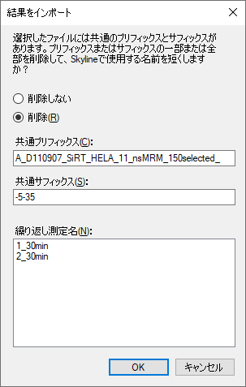
Skylineメインウィンドウに戻り、以下の操作を行います。
Skylineに、以下のようなグラフを示す [ 保持時間 ] が表示されます。
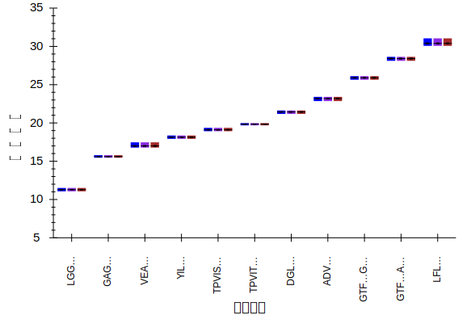
ここでは、30分のグラジエント条件で各ペプチドが溶出した平均時間のトップレベルビューを示しています。以下の操作を行ってデータの確認を続けていきます。
Skylineは、以下のようになります。
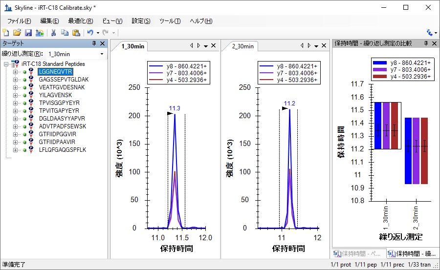
下向き矢印キーを使用してBiognosys社標準混合品内の11個のペプチドそれぞれについて、
積分が正しく表示されているか、繰り返し測定がいずれも同様の保持時間で積分ピークを表示しているかを確認します。これらのペプチドについては自動積分が良好になされているため、手動で変更を行う必要はありません。本チュートリアルには、2回の繰り返し測定のみが含まれています。自分で実際に新しいiRTカルキュレータを校正する場合には、ペプチドの平均保持時間の推定を向上させるため、より多くの繰り返し測定データを使用するとよいでしょう。保持時間のカルキュレータを校正する際に、[
結果を使用 ] するようにSkylineを設定すると、各ペプチドに測定値の平均値が使用され、ペプチドの真の平均保持時間の推定値としてのこれらの値の精度は、測定回数の平方根に比例します。
校正データの質を検証したら、下記の手順を実施して新規のiRTカルキュレータを作成し、
校正します。
[ iRTカルキュレータを校正 ] フォームは以下のようになります。
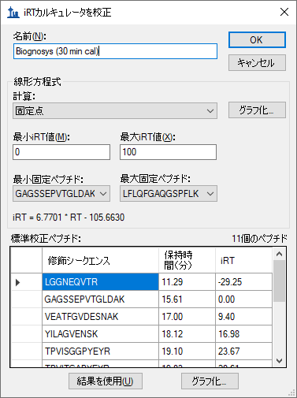
注：これはBiognosys社がiRT-C18のスケールを定義した方法にすぎません。独自のスケールを定義する場合は、最初と最後に溶出するペプチドを固定点として使用したり、その他のペプチドを任意に選択します。固定点やスケールはある程度は任意で選択することになります。ここでは、残りのiRT値をマッピングする、時間に依存する相対的な保持時間のスケールを定義しているだけです。
[ iRTカルキュレータを編集 ] フォームは以下のようになります。
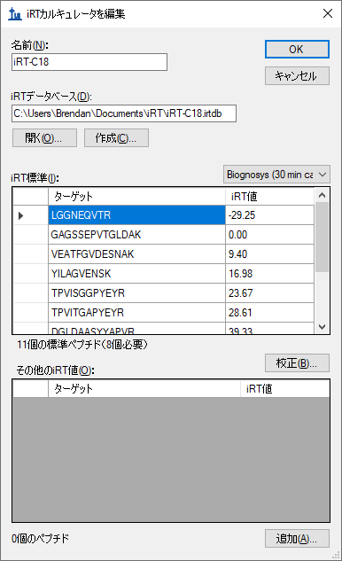
以上です。測定したデータを使って新たなiRT標準セットが校正されました。ただしこの場合は、Biognosys社のチームが、おそらく2回以上の繰り返し測定を使用してすでに独自の標準混合品を校正しています。そこで本チュートリアルでは、この校正を単に標準と置き換えますが、まずは2回の繰り返し測定値がどれだけ近いかを確認します。
が表示されるまでマウスカーソルを移動させます。さらにじっくりと比較するには、Alt-PrtScnキーでスクリーンショットを撮って画像エディターに貼り付けるか、グリッドの内容をコピーしてExcelに貼り付けると、値を並べて比較できます。
新たに作成したiRT値は、規定値にかなり近いことがわかります。実験において、すべての作業が同じクロマトグラフィーで行われ、Skylineを使用してすべてのiRT値を校正するときには、これらの値を再校正すると最良の結果が得られます。そうでない場合には、規定値がご利用のクロマトグラフィーと定義の作成に使用したクロマトグラフィーとの間で誤差を生じることがあります。幅広く共有されるiRT値を使用または作成するには、規定に固執するとよいでしょう。
本チュートリアルでは、ここで規定値に切り替えます。これを行うには、以下の手順を実施します。
規定値と測定したペプチドとの間の相関度を見るには、以下の手順を実施します。
Skylineに以下のようなグラフが表示されます。
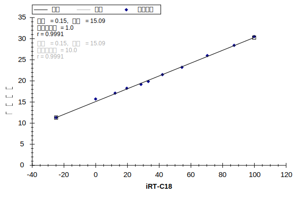
グラフの左上隅に、ピアソンの相関係数0.9991が表示されます。X軸の下にiRT-C18が表示されていない場合は、以下の操作を行う必要があります。
2つのインポートされた繰り返し測定のデータをそれぞれ個別にグラフ化した線形回帰を確認するには、以下の操作を行います。
2つの繰り返し測定のクロマトグラムグラフのタブをクリックすると、切片の値が1_30分では15.15、2_30分では15.04に変わっているのがわかります。差は非常にわずかですが、このような確認をより複雑なデータセットで行ってみたいと思われるかもしれません。
これでiRT-C18カルキュレータが完全に校正されましたが、標準ペプチド以外のペプチドのiRT値がなければ、利用価値はほとんどありません。このセクションでは、SRMの実験結果に基づき、最初のターゲットペプチドをカルキュレータに追加していきます。新しいペプチドを使って作業を始める前に、まずは現在のファイルを保存し、その後、以下の手順を実施して新しいターゲットペプチドのiRT値が計算できるようなドキュメントを作成します。
[ ターゲット ] 表示は以下のようになります。
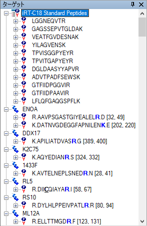
ご利用の装置でデータを収集して新しいiRT値を計算していた場合は、そのデータを取得するための装置メソッドが必要でした。Skylineウィンドウの右下隅を見ると、このドキュメントには現在1231個のトランジションがあることがわかります。これらすべてをスケジュール化せずに測定すると、複数回のインジェクションが必要となりますが、以下の2つを活用すると管理しやすくなります。
トランジションの数を半分程度に減らすには、以下の手順を実施してこのドキュメントからHeavyプリカーサーを削除します。
トランジションが632個に減ったことがわかります。メソッドをエクスポートしてこれらの新しいペプチドの保持時間を測定する前に、新しいiRT-C18カルキュレータを使用していることを指定する必要があります。これでSkylineが生成するすべての装置メソッドで標準ペプチドのトランジションが含まれるようになります。これを行うには、以下の手順を実施します。
フォームは以下のようになります。
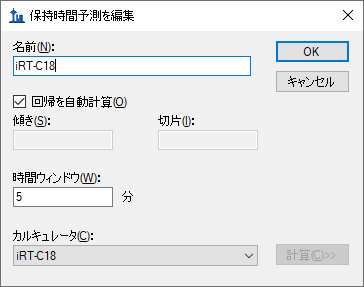
スケジュール化されていないトランジションリストをエクスポートして新しいターゲットペプチドを測定するには、以下の手順を実施します。
[ トランジションリストをエクスポート ] フォームは以下のようになります。
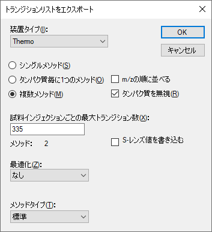
これで、ターゲットペプチドの新しいiRT値を計算するために、両者に含まれるBiognosys社標準混合品のペプチドを使用して新しいターゲットペプチドを測定する2つのトランジションリストができました。また、インジェクションごとに標準が測定されることが重要であり、Skylineではこれを、複数回のインジェクションを含むスケジュール化されたメソッドに対しても自動的に行ってドキュメント内のターゲットすべてを測定します。
ご自身の実験においては、装置メソッドへ直接エクスポートして手動でトランジションリストを読み込まないようにしてもよいでしょう。また、最大トランジションの数を少なくしたいこともあるでしょう。実際、今求めているのは有効な保持時間測定を得るのに十分に認識可能なピークですが、335個は旧式の三連四重極質量計には多すぎるかもしれません。また本チュートリアルの最後で得られるように、DDAライブラリまたはDIA実行ではさらに多くのiRT校正が得られる可能性があります。現代的な三連四重極装置であっても、1回の実行で検出可能なペプチドの数は比較的限られます。
生成されたCSVファイル「iRT Human+Standard Calibrate_0001.csv」および「iRT Human+Standard Calibrate_0002.csv」をExcelで開くと、Thermo TSQ装置の通常のトランジションリストを見ることができます。それぞれのリストの下の方には、iRTカルキュレータでリストされている標準ペプチドを測定するためのトランジションが表示されます。
チュートリアルフォルダには、先ほど作成したものと同様のトランジションリストの取得データが入ったファイルが含まれています。実際、本チュートリアルのiRT校正セクションではこのようなデータをインポートしています。ただ先ほどは、ヒトのペプチドのクロマトグラムを無視するよう選択しました。ファイルを現在のドキュメントにインポートするには、以下の手順を実施します。
iRT-C18カルキュレータが、新しいペプチドをどのようにスコアリングしているか確認するには、以下の手順を実施します。
データがインポートを終了すると、以下のようなグラフが表示されます。
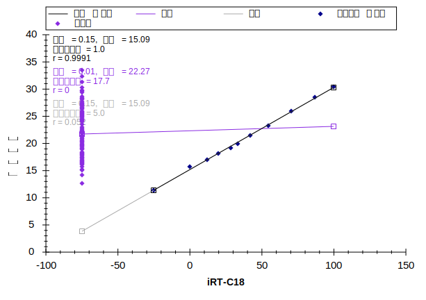
グラフの左側の紫色のポイントのクラスタは、これらのペプチドにまだ校正されたiRT値がないことを示しています。iRT値を計算する前に、ピーク積分を確認しておくとよいでしょう。
実際に自分でiRT値を校正している場合には、すべてのペプチドに対して十分に慎重に校正してください。
また、このようなスケジュール化されていないインジェクションを最初に利用してスケジュール化されたメソッドを作成すると、iRT値への変換前に平均保持時間の推定を向上させるようにそのメソッドに複数の繰り返し測定が行えます。1回の測定だけの場合、基本統計により、
平均で5%のペプチドが平均値の2倍の標準偏差を持つようになることが示されています。また、これは予測しようとしているものでもあります。
ただし本チュートリアルでは、1回の測定結果のみを使用して積分の大まかなチェックのみを行います。Skylineにより積分に問題が見つかったペプチドを確認するには、以下の手順を実施します。
[ 検索 ] フォームは以下のようになります。
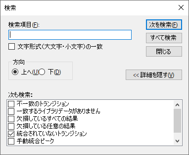
Skylineウィンドウの下には、6つの積分されていないトランジションを示す [ 結果を検索 ] が表示されます。
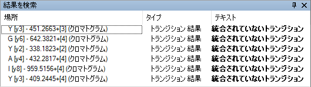
これらのピークを含むペプチドを確認するには、以下の操作を行います。
複数のトランジションが干渉を受けており、シグナルは最も強度の強いトランジションの1%未満（面積あたり）しかありません。
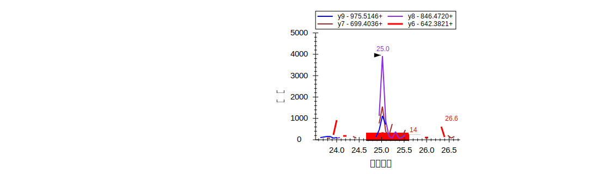 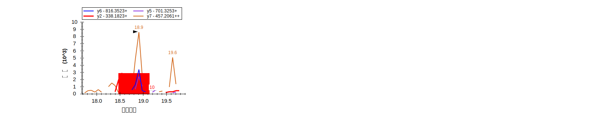
Skylineはこれらのようなトランジションを排除しますので、最終的な定量メソッドにどのトランジションを残しておくかの決定も容易になります。ただし、すでにどれを残すかを決定している場合は、以下の操作を行ってこの情報を非表示にします。
|
注：Skylineでは、これによる定量的な影響は一切ありません。定量トランジションはすべて必ず総面積計算に含まれます。トランジションを非定量にするには、[ ターゲット ] 表示内を右クリックするか、[ ドキュメント ] グリッドで [ 定量 ] プロパティを使用します。 |
ここでこのドキュメント内のターゲットペプチドのiRT値を計算するには、以下の手順を実施します。
Skylineに以下の情報メッセージが表示されます。
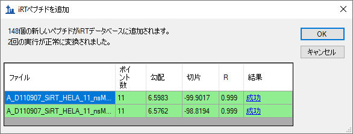
注：2回の実行に対するiRT値を求めるにあたり、Skylineはそれぞれに個別の線形回帰を行いました。その実行におけるペプチドのiRT値は、それぞれの線形回帰の結果を元に計算されます。複数の測定に同一のペプチドが含まれている場合、Skylineはこれらの最終的に計算されたiRT値の平均値を使用します。これは物理的に保持時間を平均する場合とは非常に異なり、測定全体でのグラジエントの変動も含んだものになります。両実行における回帰グラフは、グリッドの
[ 結果 ] 列の「成功」ハイパーリンクテキストをクリックすると確認できます。
Skylineは、追加されているペプチドに対してiRT標準値を再校正しますか？というメッセージを表示します。
[ iRTカルキュレータを編集 ] フォームは以下のようになります。
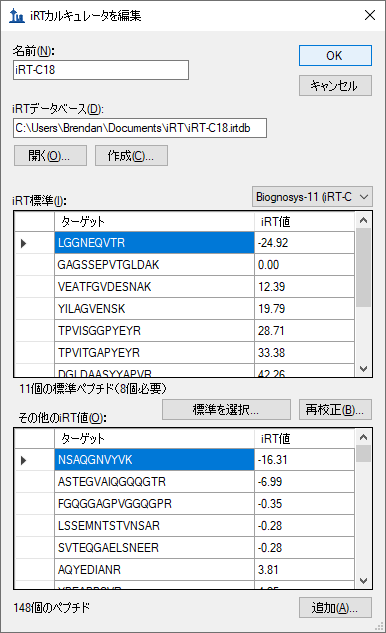
[ 保持時間 ] 表示は以下のように変わります。
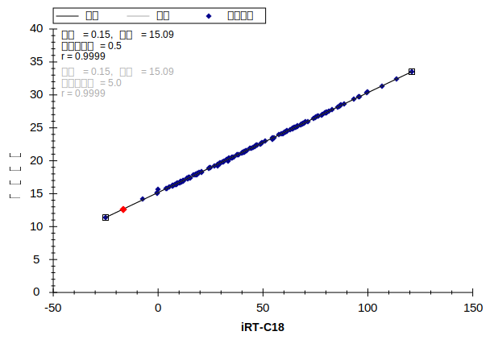
以上で、30分のグラジエント条件で取得されたデータを使用して、148個の新しいヒトのペプチドのiRT-C18値の校正が完了しました。
次に、新しいクロマトグラフィーの設定や変化するグラジエント条件に対し、iRT値が既存のメソッドをどのように利用できるか、また、たった一度の校正で比較的小さな時間ウィンドウを使ってどのようにスケジュール化された取得を開始できるかを見ていきましょう。
|
注：本チュートリアルが記述されて以来、iRTライブラリ値は、これだけ柔軟性がありますが収集状態にできる限り近いクロマトグラフィーで最もよく機能することが明らかになっています。同一のクロマトグラフィーのライブラリは、カラムの変更後のものや何年も前の異なるクロマトグラフィーで行われたものよりもよく機能します。 |
自身の研究室で行う場合には、元の「iRT Standard.sky」ファイルを開いてそのメソッドをエクスポートし、注入した標準混合品を含む十分に準備された試料でそのメソッドを取得します。チュートリアルフォルダには、この方法により作成した生データのファイルがあります。上記で測定されたものと同じ試料を、新しい別の分析カラムを使用する質量分析計に90分のグラジエントで注入し、標準ペプチドのみを測定しました。
この作業を続ける前に以下の操作を行ってください。
作成したメソッドを新しいカラムに対して90分のグラジエント条件で再校正するには、以下の手順を実施します。
[ ペプチド設定 ] フォームは以下のようになります。
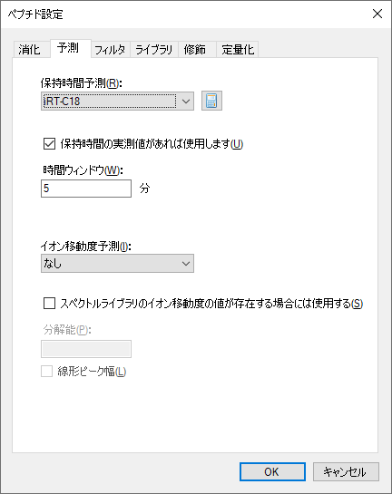
データがインポートを終了すると、[ 保持時間 ] 回帰グラフが以下のように表示されます。
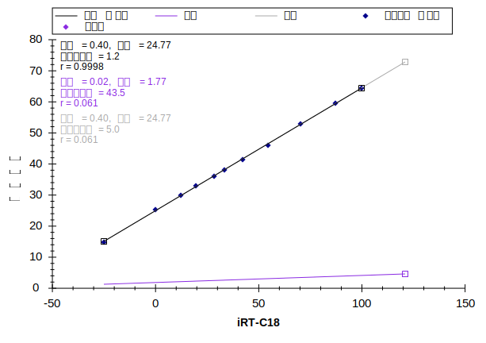
標準ペプチドの保持時間が約15分～65分の範囲となり、この実行においてはターゲットペプチドが一切測定されていません。ただし、これでこの新しいグラジエント条件で測定が可能になりました。
スケジュール化されたメソッドを作成する前に、以下の操作を行って、スケジュール化のパラメータがある場合にトランジションがどのように測定されるかをもう少し理解します。
[ 保持時間 ] 表示に新たな [ スケジュール ] タブが含まれ、以下のようなグラフが表示されます。
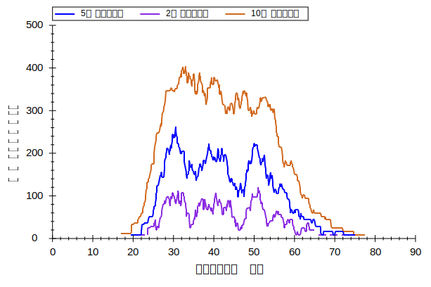
上記グラフ内に3本の線すべてが表示されない場合は、以下の操作を行います。
このグラフから、スケジュールに対する時間ウィンドウサイズの影響が確認できます。時間ウィンドウが小さいほど、任意の時間内で同時に測定されるトランジションの数は少なくなります。これにより、特定のドウェル時間での1回のインジェクションでより多くのトランジションが測定可能となります。ターゲットペプチドのピーク全体を割合で捉えるために必要なウィンドウサイズは、以下の関数によって概算されます。
ここで「z」は正規分布において希望するパーセント内に収まる標準偏差数の重要な値であり、例えば95%であれば1.96となります。保持時間の予測値が完全でありピーク幅または保持時間に分散がない場合、必要とされるウィンドウサイズはピーク幅と同じになります。一方、保持時間の予測値が完全でも、ピーク幅または保持時間の分散があった場合には、必要なウィンドウサイズが広がります。最後に、予測誤差によってサイズはさらに広がります。保持時間を
予測する最新の手法を用いても、ターゲットシステムにおいてスケジュール化された取得前にスケジュール化されていない測定を1回行うだけでは完璧ではないということは、注目すべきです。ここでは平均保持時間を予測しようとしています。この1回の測定では、すべてのペプチドのうち約5%は、平均値から標準偏差の2倍以上となることになります。
iRTメソッドにより、本チュートリアルのターゲットペプチドは、5分のウィンドウ内で90分のグラジエントで測定できます。上記グラフは、これがシングルサイクルにてトランジション約265個以下の測定で行えることを示しています。ドウェル時間が10 msであれば、サイクル時間は最大2.6秒となります。スケジュール化された取得を使用して、この新しいグラジエント条件で本ドキュメント内の1223個のトランジションを測定するシングルメソッドを作成するには、以下の手順を実施します。
[ トランジションリストをエクスポート ] フォームは以下のようになります。
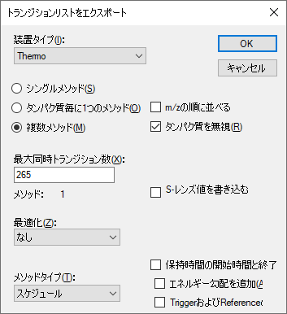
または単に [ シングルメソッド ] オプションを選択することも可能ですが、このフォームが [ メソッド： 1 ]
を表示するということは、5分ウィンドウで、常時測定される同時トランジション数が265未満であれば、1回のインジェクションで測定が可能であることが確認されます。
このトランジションの数は、定量的な測定としてはそれでも少し多いものの、2回のインジェクションで335個のトランジションの最大半分を測定しなければならないよりもよいでしょう。また、トランジションの数を135に下げることもできます。この場合は2回のインジェクションとなり、3回のインジェクションであれば90個のトランジションにすることもできます。
ただし、ここではこの値を265に設定し直してください。
Windows File Explorerで、この作業により、本チュートリアル用のiRTフォルダの中に「iRT
Human+Standard_0001.csv」ファイルが作成されていることを確認しましょう。Excelでは、
このファイルに1223個のトランジションすべてが含まれており、スケジュール化の開始時間と終了時間の間には5分の間隔があります。
先ほど作成したメソッドにより取得したデータを確認するには、まず以下の操作を行って90分のグラジエント条件の設定の際に使用した校正データを削除します。
ここで以下の操作を行って、iRTを利用してスケジュール化したメソッドで取得したデータを、以下のようにインポートします。
データを読み込む間に、以下の操作を行って [ 保持時間 ] 表示を [ 線形回帰 ] に戻すことが可能です。
データが読み込みを終了すると、[ 保持時間 ] 表示に以下のようなグラフが表示されます。
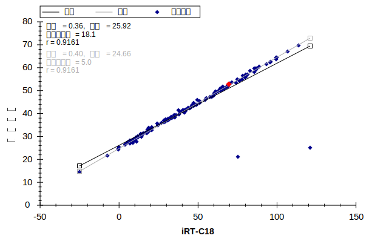
このグラフから、2つの「異常値」をもつペプチドがあることがわかります。これは、現在のデータにあるきちんと積分されていないピーク、またはiRT値が計算された校正データにあるきちんと積分されていないピークによるものである可能性があります。今回の場合は、30分のグラジエントでのiRT校正の間にSkylineが自動的に選択したピークに問題があります。今表示されているデータは、上記で生成したスケジュールメソッドにより実際に収集されたものではないことに注意することが重要です。メソッドが実際に収集したデータである場合は、「異常値」を示したペプチドのクロマトグラムにここで検出されたピークが含まれることはありません。このデータは、本チュートリアルの中では割愛しましたが、校正データをより詳細に確認した後に作成されたスケジュールメソッドで収集されました。
ここで、どちらの点も凡例で「異常値」に指定した紫色でない理由は、相関係数閾値が、これだけ相関度の高いカルキュレータ用にうまく設定されていないからです。以下の操作を行うと、相関閾値を変更できます。
[ 保持時間 ] グラフは以下のようになります。
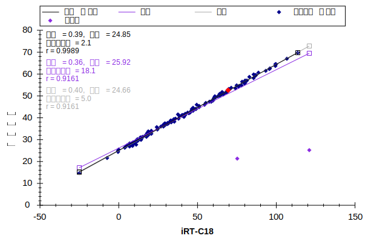
ここで各「異常値」をクリックすると、Skylineがペプチド表示でその値を選択します。Escを押してメインウィンドウに戻り、Ctrl+Cを押して異常値となったペプチド標識をコピーします。
これらを別のエディタで収集して後で確認したり、または先ほど作成した「iRT
Human+Standard Calibrate.sky」ファイルでSkylineの2つ目のインスタンスを開くこともできます。その後 [ 検索 ] フォームを利用するとこれらの2つのペプチドを再確認できます。
EVVEEAENGR
LLADQAEAR
どちらも、対象となるペプチドとして校正されたデータから確信を持って特定するのは非常に難しくなっています。校正においてできる限り慎重にならなければならないのはこのためです。
標識参照ペプチドを使用して正しいピークが選択されるようにした、このより正確なデータに基づいて、本ドキュメント内のすべてのペプチドのiRT値が再計算できるようになりました。上記で概説する校正手順を繰り返し、選択を要請されたら [ 既存の値を置き換え ] を選択します。ただし、本チュートリアルでは、以下の操作を行って誤って校正されたペプチドを削除できます。
2つの「異常値」がグラフから削除され、ペプチドの数が2つ減って156となります。すべての点は回帰線周囲に密接に固まっているように見えます。また、相関係数Rは実際に0.9989となっていますが、測定時間がどの程度線形予測に近くなるかをよりよく理解するには、以下の操作を行います。
[ 保持時間 ] グラフは以下のようになります。
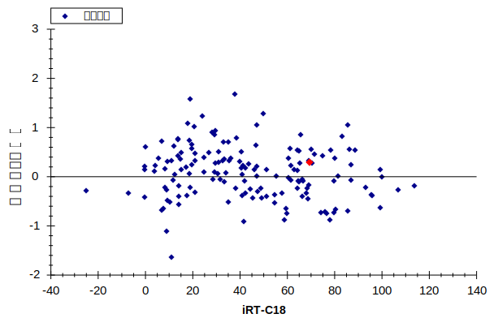
これによって、測定時間が予測時間の+/-2分で変化することがより明らかになります。この
場合、どのような保持時間スケジュールウィンドウを使用すればよいのでしょうか？実験では何が使用されたのでしょうか？
次にここで [ ターゲット ] 表示内をクリックし、下向き矢印キーを利用してペプチドクロマトグラムを確認します。Skylineには以下のようなグラフが表示されます。
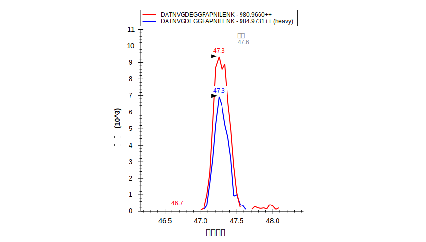
標準ペプチドを除くすべてのペプチドにLightとHeavyプリカーサーのペアが見られるようになり、スケジュール化されていないデータと比較すると、概して各ピークでより多くのポイントが見られます。また、Skylineが「予測」とピークの予測時間を示します。
スケジュールウィンドウに関する上記の質問に答えるには、以下の操作を行うことができます。
6分のクロマトグラム範囲が確認できたら、以下の操作を行います。
この実験では、データは1回のインジェクションから得られたものですが、[ 回帰を自動計算 ]
設定により、より正確な定量を希望する場合には、このようにすべてのペプチドの測定に複数回のスケジュールインジェクションを必要とするドキュメントに対しても、各インジェクションに個別の回帰が計算されます。そのようなドキュメントに対するメソッドをエクスポートする場合、Skylineではすべてのメソッドに標準ペプチドのトランジションが含まれます。この自動回帰機能により、すべてのインジェクションに対して線形方程式を1つだけ計算するよりも正確な保持時間予測が得られ、それにより、「予測」注釈がより強固なペプチドの同定検証
ツールとなります。
十分に信頼でき、同定できる高濃度でiRTカルキュレータの標準ペプチドを含んだデータ依存的測定（DDA）によってMS/MSスペクトルからデータを収集した場合、その測定データを利用して、SRMのデータで行った方法とほとんど同じ方法でiRT値が計算できます。一般に、これらのiRT値の精度は少し低くなりますが、これはペプチド溶出ピークのどこででも発生可能なスキャン時間に基づいているためです。ただし、スキャンデータベースのiRT値を用いることにより、DDAによる探索実験からスケジュール化されたSRMへと直接移行し、プロセスに必要な時間をかなり節約できます。これはまた、「DIA/SWATHデータの分析」チュートリアルで説明するように、データ非依存的測定（DIA）データ内でのクロマトグラムピークのクエリに使用するiRT値を校正する最も一般的なメソッドとなりました。
本チュートリアルのiRTフォルダ内に、「Yeast+Standard」というサブフォルダがありますが、この中に、「Yeast_iRT_C18_0_00001.blib」というスペクトルライブラリがあります。このスペクトルライブラリは、Biognosys社の保持時間の標準混合品を添加した酵母溶解物の、2回のDDA分析結果をSEQUESTでペプチド検索した結果から構築されたものです。下記のように、iRTデータベースに十分な数のペプチドが蓄積されると、インポートするデータに常に標準ペプチドを含めておく必要はなくなります。ただし、Skylineが構築するBiblioSpecライブラリフォーマットを使用する必要があります。その他のフォーマットでは、質量分析装置での測定データごとに個別に保持時間を維持しないため、同一のクロマトグラフィー条件での保持時間の回帰は計算できません。
以下の操作を行うと、このライブラリ内にあるペプチドスペクトルと一致するiRT値を追加できます。
[ スペクトルライブラリを追加 ] フォームは以下のようになります。
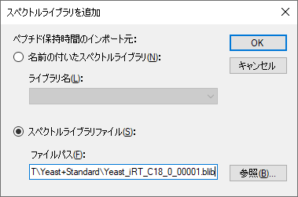
Skylineには以下のようなフォームが表示されます。
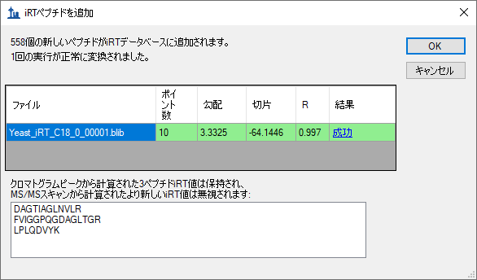
このフォームでは、ライブラリ内の2回のDDAの実行に対し、Skylineにて1回の有効な回帰が計算できたことが示されています。可能な場合、Skylineでは実行間で一致するすべてのペプチドを使用して内部実行間回帰が実施されます。これは標準ペプチドのみを使用した回帰よりもうまく行くことが実証されています。この最終的な校正回帰を利用して、Skylineでは新たに558個のペプチドのiRT値が計算されています。内部調整後、Skylineではペプチドに一致したすべてのMS/MSスペクトルに対して時間の中央値を使用します。これによってMS/MSスペクトルに一致した異常値が無意味なiRT値を生じないようにすることができます。また、3つのペプチドについては、クロマトグラムピークを基にしたiRT値の情報がありますので、ここでは無視されます。
Skylineは、追加されているペプチドに対してiRT標準値を再校正しますか？というメッセージを表示します。
これで [ iRTカルキュレータを編集 ] フォームには、[ その他のiRT値 ] リストに706個のペプチドが表示されます。
MS/MSスキャン時間を基に計算したiRT値を使用すると、今度はこれらのペプチドのSRM取得をスケジュールできます。 さらに、その後実際のSRMデータを使用し、クロマトグラムピーク時間に基づいてより正確なiRT値を得ることもできます。ただし、SkylineのMS1フィルタを利用すると、元のDDA実行からクロマトグラムピーク時間を直接抽出することもできます。MS1フィルタのドキュメントへのデータの設定とインポートの詳細については、MS1フルスキャンフィルタチュートリアルをご覧ください。本チュートリアルでは、以下の操作を行い、すでに作成されデータがインポートされているドキュメントを使用し、スペクトルライブラリの作成に使用する2回のDDA実行を見て行きます。
Skylineは以下のようになります。
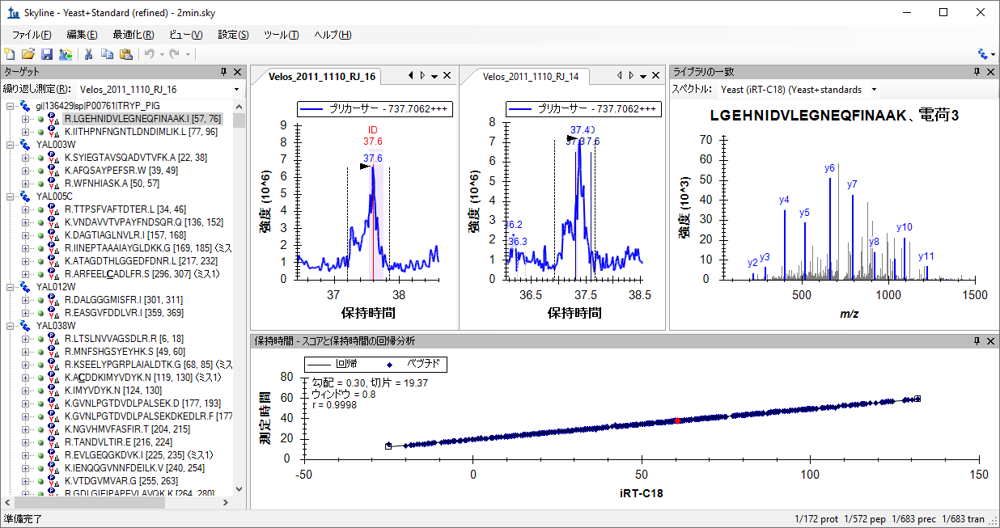
[ 保持時間 ] 表示のタイトルバーをダブルクリックすると、グラフが見やすくなります。 また、ライブラリスペクトルから計算されたiRT値による測定時間の回帰の相関係数は0.9998であることがわかります。このことから、クロマトグラムピークの使用とMS/MSスキャン時間の使用との比較では、期待するほどの違いはないと思われます。一方、このデータセットは、両方の実行で明確なピークが検出されたペプチドのみを保持するように手動で最適化されています。また、スペクトルライブラリデータを使用してペプチドの初期基準となるiRT値を計算する場合には、検出基準を検討してみてもよいでしょう。
このファイルで表示されるクロマトグラムは、スペクトルライブラリの構築に使用されたDDA実行のMS1スキャンから抽出されたものです。また、同定されたMS/MSスキャンが測定された時間についても確認できます。 クロマトグラムグラフでは、これらに「ID」の注釈が付いています。繰り返しになりますが、このデータ処理メソッドの活用方法の詳細については、MS1フルスキャンフィルタチュートリアルをご確認ください。
MS/MSスキャン時間を利用して計算されたiRT値をこのドキュメント内のクロマトグラムピーク時間を使用して計算されたiRT値に変換するには、以下の手順を実施します。
Skylineには以下のようなフォームが表示されます。
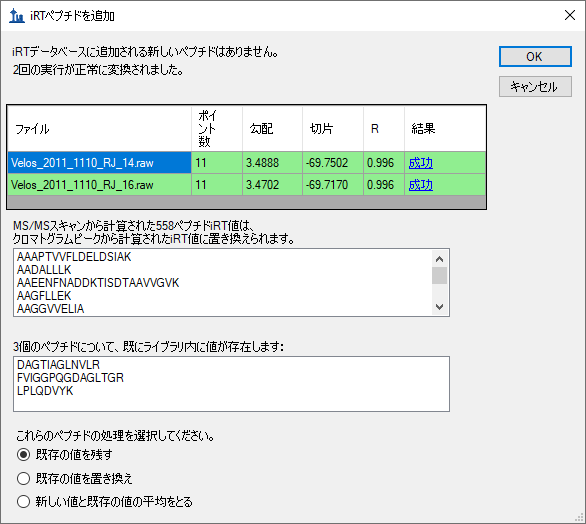
ここでは、これまでのセクションで追加した558個のiRT値が置換されることを示しています。クロマトグラムピーク時間を使用するようになったため、酵母およびヒトのサンプルで共有されている3つのペプチドを置換するオプションや、2つの値の平均値を使用するオプションもあります。
Skylineは、追加されているペプチドに対してiRT標準値を再校正しますか？というメッセージを表示します。
これで、ある程度満足のいく、適切なiRT値を持つ706個のペプチドが揃いましたが、これらの計算には、最大2回の繰り返し測定しか使われていません。これらの最初のケースにおい
ては、iRT-C18カルキュレータで規定されたペプチド標準混合品を含むデータセットを使用しましたが、これは必須ではありません。今度は、利用中のiRTデータベースに共通するペプチドを十分に有しているあらゆるデータセットから、新しいiRT値を計算できるようになりました。Skylineでは、相関度が0.99以上の回帰を生み出すあらゆる共通のペプチドを使用しますが、このようなペプチドは20種類以上ある必要があります。
SkylineでのiRTサポートの試験においては、上記のようなスペクトルライブラリおよびSkylineドキュメントがPeptideAtlas3の公開データから作成されています。そのデータセットには20回を超える繰り返し測定データが含まれており、1000個以上のiRT値が作成されましたが、本チュートリアルに含めるには明らかに大き過ぎました。
|
注：近年、Selevsek、MCP 2015で発表されて以来、酵母に対しても、MS/MSスペクトルから校正されたiRT値を持つプロテオーム全体のスペクトラルライブラリの作成に10-30 DDA実行による化学的分画が使用されています。これらのライブラリには、多くの場合50,000個を超えるペプチドのiRT値が含まれています。 |
また、[ iRTカルキュレータを編集 ] フォームの [ 追加 ] ボタンをクリックすると、Skylineが表示するメニューに [ iRTデータベースを追加 ] が含まれていることに気付かれたかもしれません。このメニュー項目を利用して、既存のiRTデータベースを現在のカルキュレータに統合することも可能です。データベースで同一の標準ペプチドが使用されている場合には、それを使用してあるデータベースから別のデータベースへの変換の回帰を実施します。それ以外の場合には、その他のデータソースと同様に、Skylineは2つのデータベースに共通で相関度0.99以上の回帰を生み出すペプチドを使用しますが、このようなデータは20種類以上ある必要があります。
[ iRTカルキュレータを編集 ] フォームの [ 開く ] ボタンをクリックすると、他の人から受け取ったりした既存のiRTデータベースが使用できます。
また [ iRTカルキュレータを編集 ] の [ 標準を選択 ] ボタンを利用して標準ペプチドをデータ
ベースに含まれているあらゆるペプチドセットに変更できるほか、[ 再校正
] ボタンを利用してiRTスケールを変更することもできます。
本チュートリアルではSkylineでサポートされているiRTの使い方を学びました。これは実験的に測定されたペプチド保持時間を保存して、ターゲットメソッド（SRMまたはPRM）のスケ
ジュール、DIAデータからのターゲット抽出、取得後のペプチド同定検証に使用できるようにする標準的な方法です。ほとんどの場合、測定するペプチドのiRT値が保存されていれば、シングル校正インジェクションでSRMまたはPRM取得のあらゆる数のペプチドターゲットをスケジュールできます。さらに正確な保持時間を予測できれば、iRT予測はシークエンスベースの予測よりも強力なペプチド同定確認ツールとなります。Skylineを用いると、iRTのメソッドは使いやすくなり、iRT値は作成しやすくなります。さらに、iRT値をあらゆるスケール（ただし現在のところはiRT-C18がもっとも一般的）およびあらゆる標準ペプチドセットに基づき計算することも可能です。また、常に測定が可能で、予測しようとしているグラジエント条件の範囲の大半を網羅していれば、特定の実験に対する内在性のペプチドを標準のペプチドとして使用することも可能です。Skylineにより、iRTデータベースに共通のペプチドが存在している場合には、iRTデータベースを統合することも容易になります。ここでは、元の論文で規定されている標準のiRTスケールであるiRT-C18について学習しましたが、ご自身の実験のキットを使用することもできます。Skylineでは現在、iRT-C18に対して校正されている6種程度を提供しています。SkylineによりiRT-C18スケールは使いやすくなりますが、何百もの一般的なヒトおよび酵母ペプチドで校正してきたように、使用する標準ペプチドを、スケールに校正されたあらゆるペプチドセットに変更することも簡単にできます。
1. Krokhin, O. V. et al. An improved model for prediction of retention times of tryptic peptides in ion pair reversed-phase HPLC: its application to protein peptide mapping by off-line HPLC-MALDI MS. Mol. Cell Proteomics 3, 908-919 (2004).
2. Escher, C. et al. Using iRT, a normalized retention time for more targeted measurement of peptides. Proteomics (accepted) (2012).
3. Deutsch, E. W., Lam, H. & Aebersold, R. PeptideAtlas: a resource for target selection for emerging targeted proteomics workflows. EMBO Rep 9, 429-434 (2008).